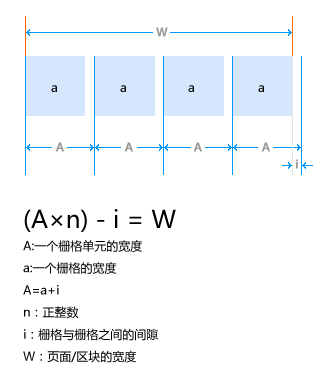

概念

| 超小屏幕 手机 (<768px) | 小屏幕 平板 (≥768px) | 中等屏幕 桌面显示器 (≥992px) | 大屏幕 大桌面显示器 (≥1200px) | |
|---|---|---|---|---|
| 栅格系统行为 | 总是水平排列 | 开始是堆叠在一起的，当大于这些阈值时将变为水平排列C | ||
.container 最大宽度 |
None （自动） | 750px | 970px | 1170px |
| 类前缀 | .col-xs- |
.col-sm- |
.col-md- |
.col-lg- |
| 列（column）数 | 12 | |||
| 最大列（column）宽 | 自动 | ~62px | ~81px | ~97px |
| 槽（gutter）宽 | 30px （每列左右均有 15px） | |||
| 可嵌套 | 是 | |||
| 偏移（Offsets） | 是 | |||
| 列排序 | 是 | |||